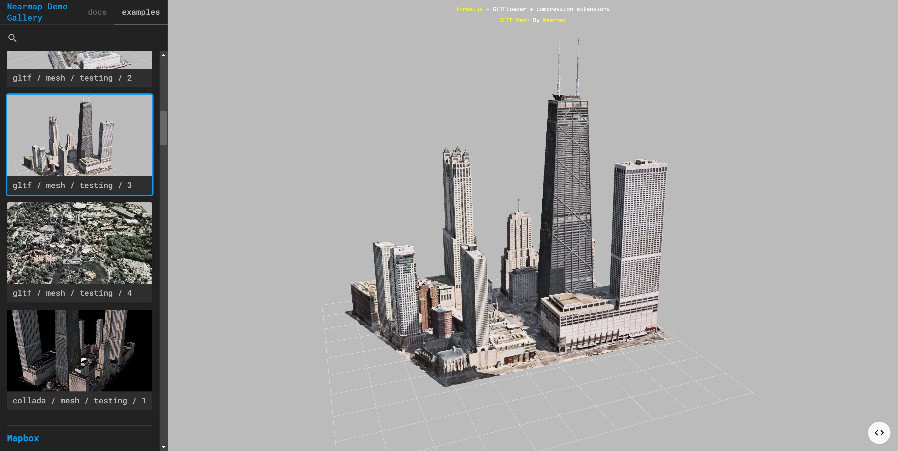
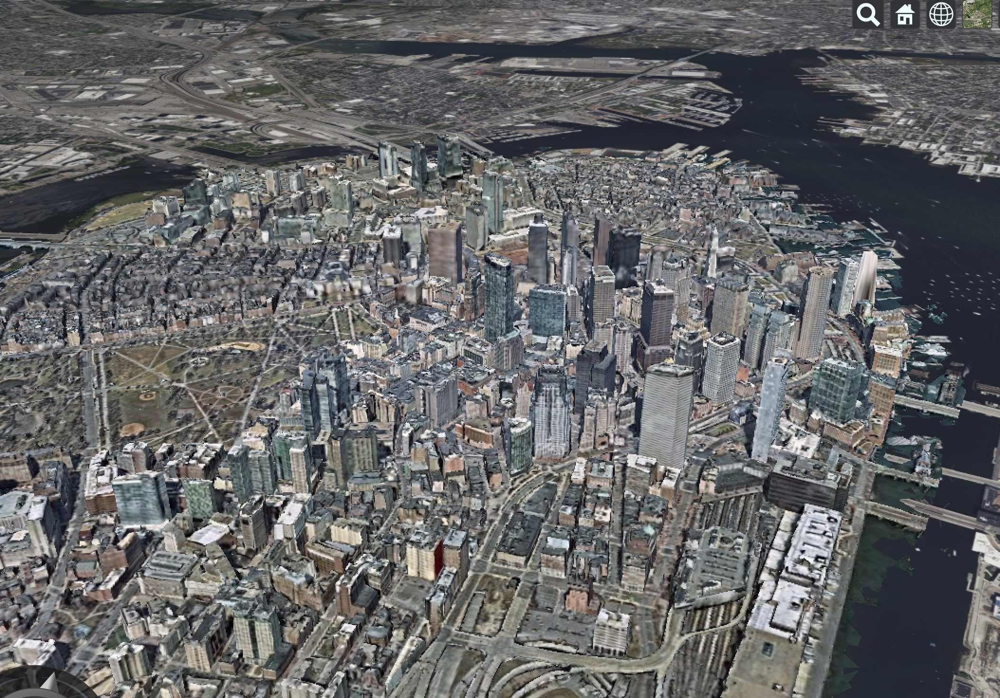
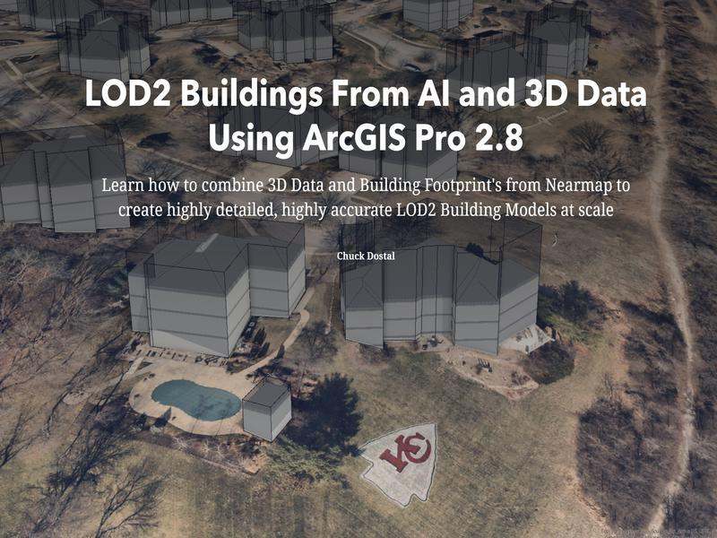
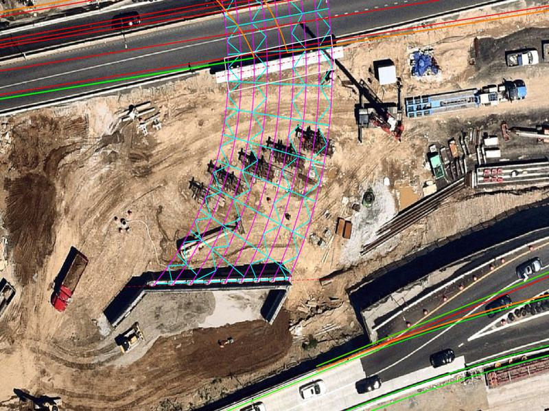

Nearmap Demo Gallery
Welcome to the Nearmap Demo Gallery — a curated showcase of Nearmap's high-fidelity aerial imagery, 3D meshes, and geospatial content. Use this gallery for sales calls, live demos, or exploring what's possible with Nearmap data.

Browse the sidebar to explore examples across mapping frameworks, 3D meshes, story maps, dashboards, video content, and more. All content is optimized for fast load times and smooth in-browser rendering.
Try It — Interactive 3D Meshes
Click a viewer to rotate and zoom; click outside or scroll in the margin to continue down the page.
Mesh Viewer
High-fidelity 3D meshes rendered in-browser with Three.js. Content is stored locally for minimal load times. GLTF is the most optimized format. Supported formats: OBJ, GLTF, Collada, XYZ.

Mapping Framework Integrations
Nearmap content works with Mapbox, ArcGIS, OpenLayers, Cesium, and Google Maps. Examples include high-res raster tiles, WMS, mesh data, and AI vector data — all live-coded for easy sharing.

Storymaps
Interactive story maps showcasing Nearmap value propositions. Hosted via iframe for sales and demo use.

Video & Dashboards
High-resolution video content, Twinmotion renders, and live dashboards for impact response, vegetation management, and building change analysis.

What's Included

- 3D Mesh Viewer — GLTF, OBJ, and other formats rendered in-browser with Three.js
- Mapping Integrations — Mapbox, ArcGIS, OpenLayers, Cesium, and Google Maps
- Storymaps — Interactive story maps showcasing Nearmap value propositions
- Dashboards — Impact response, vegetation management, building change, and more
- Video Gallery — High-resolution video content and Twinmotion renders
- Transactional API — Roof assessments, coverage checks, and download tools
- Engineering & AEC — OpenRoads, Infraworks, Cesium Ion integrations